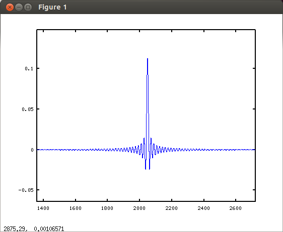
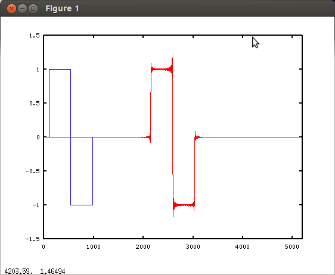
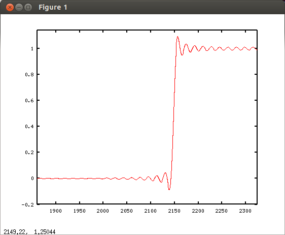
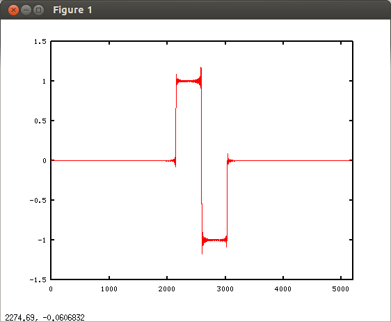
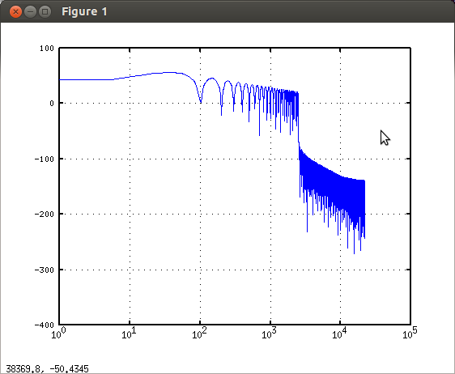
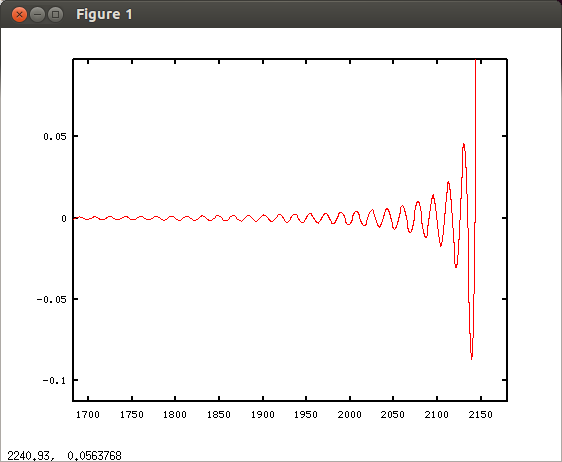
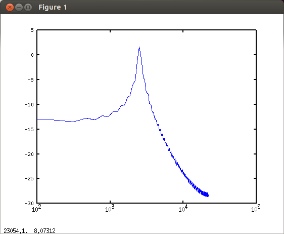
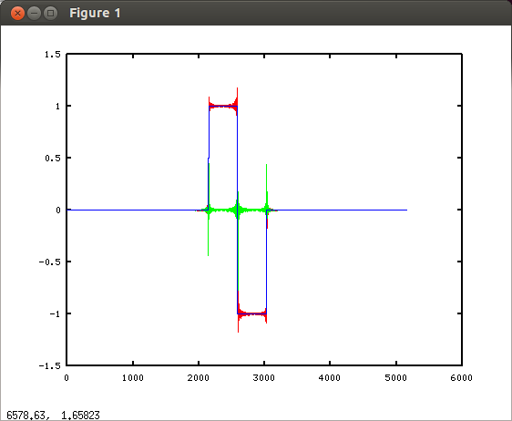
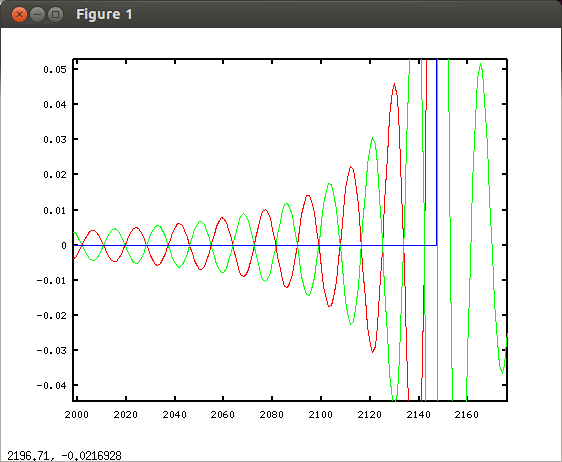

助手：今回は読者からのお便りがあります。「firフィルターのプリエコーについて教えてください。知り合いのオーディオまにあにプリエコーがあると音が悪くなるといわれました。どうしたらよいですか？」
室長：ちょっとまて。このサイトは出来たばかりでまだグーグルでもまともに検索できん。メールアドレスも書いてないし、コメントもない。読者からお便りがくるわけない。「捏○」では….
助手：そんな「○造」だなんて人聞きの悪い….演出の範囲ですよ。さっさと答えてください。
室長：しかしプリエコーの問題は難しくて当研究室にはちと荷が重い。だがわかる範囲で適当に述べるので眉にたっぷり唾をつけてきいてくれ。
助手：大丈夫です、そんなこと言わなくてもこのサイトの内容を鵜呑みにするような人はいませんよ。
室長：まずプリエコーとはfirフィルタを通すことによって実際の信号の前に波形が現れてしまう現象じゃ。これをみてくれ。サンプリング周波数44100、4096tap、2.5kHzのローパスフィルタの波形じゃ。
fs=44100;
f=2500;
a=fir1(4095,f/fs*2,'low',kaiser(4096,8));
plot(a);
 線形位相のfirフィルタは左右対称になるのでこの様にインパルスの前に波形が見える。このフィルタに信号を通すとこうなる。
fs=44100;
f=2500;
a=fir1(4094,f/fs*2,'low',kaiser(4095,8));
s=[zeros(100,1) ; ones(441,1) ; -ones(441,1) ; zeros(100,1)];
as=fftconv(a,s);
clf;
hold on;
plot(s);
plot(as,'1');
  実際の信号が現れる前に余計な波形が見える。これがプリエコーだ。
自然界にはこのような現象がないのは常識としてわかるな。だがこれは数学的には正しいのだ。なぜならすべての波形は無限に続く様々な周波数を加算したものと考えるからじゃ。その結果、急激な立ち上がりの波形ができている。その波形をフィルタで周波数を分けると隠れていた周波数成分が見えてしまうのだ。
助手：数学的に正しいのなら問題ないですね。
室長：そうはいかん。数学的に正しいといっても音が正しいとは限らん。 たとえばこの波形をトータルでfftすれば周波数成分は正しい。
fs=44100;
f=2500;
a=fir1(4095,f/fs*2,'low',kaiser(4096,8));
s=[zeros(100,1) ; ones(441,1) ; -ones(441,1) ; zeros(100,1)];
as=fftconv(a,s);
clf;
plot(as,'1');
 
だか前半のこの部分だけを見てくれ。 
プリエコーの部分だけを切り取ってfftしてみる。 
この部分にはカットオフ周波数の成分が実際の音の前に現れていることが分かる。シンバルをカツン!とたたく前に音がでては明らかにおかしい。
助手：じゃあプリエコーが無いフィルタにすれば良いじゃないですか。
室長：そうはいかん。位相を変えないためには左右対称になるのでプリエコーは必然だ。
助手：……..
室長：まあ簡単に言ってしまえば「正解はない」と言うことじゃ。市販のCDプレーヤーでもプリエコーが無いフィルタとあるフィルタを切り替えできるものがある。どちらかが明らかに優れていれば切り替えなどつけないだろう。だが正解はないと言っても当研究室の見解を述べておこう。
助手：なんだか良く分からなくなってきましたがお願いします。
室長：まずCDプレーヤーなどのローパスフィルタとチャンネルデバイダのフィルタとで分けて考えるぞ。なぜならCDプレーヤのローパスフィルタは不要な帯域を捨てるためのもので残った信号だけを考えれば良い。一方チャンデバの場合は不要な帯域ではなく、必要な帯域を分割した後でスピーカーで再生して空間合成して正しい波形を再生しなければならんからじゃ。
助手：それが関係あるのですか？
室長：おおありじゃ。まずはCDプレーヤーのローパスフィルタじゃが、ワシの考えではプリエコーが無いフィルタの方が自然だと思う。Ayreなどが使っているミニマムフェイズフィルターなどが優れていると思うぞ。ただワシの耳の高域特性は極めて怪しいので聴感上の意見を言えないのが残念じゃがの。
助手：じゃあチャンネルデバイダもプリエコーが無いフィルタを使った方が良いんじゃないですか？
室長：チャンネルデバイダの場合には条件が違う。必要な帯域を分割した上でスピーカーで再生し、空間で合成されてリスニングポイントでどう聞こえるかを考えなくてはならない。位相がズレては正しい波形が再現できないのだ。この波形を見てくれ。
fs=44100;
f=2500;
a=fir1(4094,f/fs*2,'low',kaiser(4095,8));
b=fir1(4094,f/fs*2,'high',kaiser(4095,8));
s=[zeros(100,1) ; ones(441,1) ; -ones(441,1) ; zeros(100,1)];
as=fftconv(a,s);
bs=fftconv(b,s);
clf;
hold on;
plot(as,'1');
plot(bs,'2');
plot(as+bs,'3');
 
赤がローパスフィルタに通した波形、緑がハイパスフィルタに通した波形、青がその二つを加算した波形だ。これをみると合成された青の波形にプリエコーは無い。つまり空間合成が理想的にいけばローパスフィルタのプリエコーとハイパスフィルタのプリエコーは打ち消しあって聞こえないことになる。
助手：ほんとだ! これならプリエコーがあっても良いじゃないですか！
室長：だが空間合成が常にうまくいくとは限らない。スピーカーユニット間の距離、スピーカーユニット特性のバラツキ、リスニングポイント、部屋の反射などに影響を受ける。低い周波数ほどうまくいくが高い周波数になるとちょっとしたリスニンング位置のズレによってうまく打ち消されずにプリエコーが聞こえてしまう。
助手：じゃあ高い周波数ではプリエコーをなるべく小さくするようにすれば良いのですか？
室長：その通り。ちなみに直線位相のフィルターではプリエコーは遮断特性を急峻にすれば多くなり、緩くすればすくなくなる。言い換えれば周波数の重なりを少なくすれば時間的な重なりは多くなり、遮断を緩やかにして周波数帯域の重なりが多くなれば時間的な重なりは少なくなる。両方良くすることは無理なのじゃ。
助手：具体的にどうフィルタを設計すれば良いか教えてください。
室長：今日は疲れたので次回にするぞ。
2012年12月19日